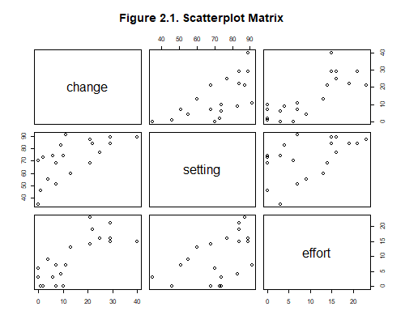

{% include r.css %}


<div id="c2s1" class="section level1 first">
<h1 class="first">2. Linear Models</h1>
<p>We start with the linear models in Chapter 2 of the lecture notes,
showing how to use the <code>lm()</code> function in R to fit
regression, analysis of variance, and analysis of covariance models.</p>
<div id="the-program-effort-data" class="section level2">
<h2>2.1 The Program Effort Data</h2>
<p>For a brief description of the program effort data see the lecture
notes or point your browser to the datasets page. All datasets used in
the course are in plain text format, and they are also available as
Stata system files. Both formats can be read directly from the web.</p>
<pre class="r"><code>&gt; fpe &lt;- read.table(&quot;https://grodri.github.io/datasets/effort.dat&quot;)</code></pre>
<p>The <code>read.table()</code> function produces a data frame, which
we assign to <code>fpe</code>. To make sure everything is alright we
list the data by simply typing <code>fpe</code>, which invokes the
<code>print()</code> method.</p>
<pre class="r"><code>&gt; fpe</code></pre>
<pre><code>               setting effort change
Bolivia             46      0      1
Brazil              74      0     10
Chile               89     16     29
Colombia            77     16     25
CostaRica           84     21     29
Cuba                89     15     40
DominicanRep        68     14     21
Ecuador             70      6      0
ElSalvador          60     13     13
Guatemala           55      9      4
Haiti               35      3      0
Honduras            51      7      7
Jamaica             87     23     21
Mexico              83      4      9
Nicaragua           68      0      7
Panama              84     19     22
Paraguay            74      3      6
Peru                73      0      2
TrinidadTobago      84     15     29
Venezuela           91      7     11</code></pre>
<p>As you can see, we have 20 observations on three variables: social
<code>setting</code>, family planning <code>effort</code>, and fertility
<code>change</code>. The country names serve as row names. Tidy tools
prefer a separate column, which you can create by typing
<code>fpe$country = row.names(fpe)</code>.</p>
<p>The next thing we want to do is plot the data for a closer look. The
importance of becoming familiar with your data before undertaking
sophisticated analyses cannot be over-emphasized. Let us create
scatterplots of all pairs of variables, reproducing Figure 2.1 in the
notes.</p>
<p>The <code>pairs()</code> function in base R creates scatterplots of
all pairs of variables. Obviously only numeric variables should be
included, but that’s not a problem here, and we could just say
<code>pairs(fpe)</code>. I think, however, that the plot is easier to
read if we use the same order as in the notes, which we can easily do
using the variable names as column subscripts. (Fans of
<code>ggplot</code> might want to use <code>ggpairs</code> in the
<code>GGally</code> package instead.)</p>
<pre class="r"><code>&gt; png(filename = &quot;pairsr.png&quot;, width=500, height=400)
&gt; pairs(fpe[, c(&quot;change&quot;,&quot;setting&quot;,&quot;effort&quot;)], 
+   main=&quot;Figure 2.1. Scatterplot Matrix&quot;)
&gt; dev.off()</code></pre>
<pre><code>png 
  2 </code></pre>
<p></p>
<p>R graphs are displayed in the active graphics device. Here we opened
a PNG device and drew the graph. If you are using R interactively via R
Studio, you can also use <code>export</code> in the graphical user
interface (GUI) to save the graph as PDF, or in a variety of image
formats.</p>
<p><small>Updated fall 2022</small></p>
</div>
</div>
